Frühlingssemester 2026
Student Projects
MLOps — Hochschule Luzern
No matching projects
Try a different keyword or clear the search.
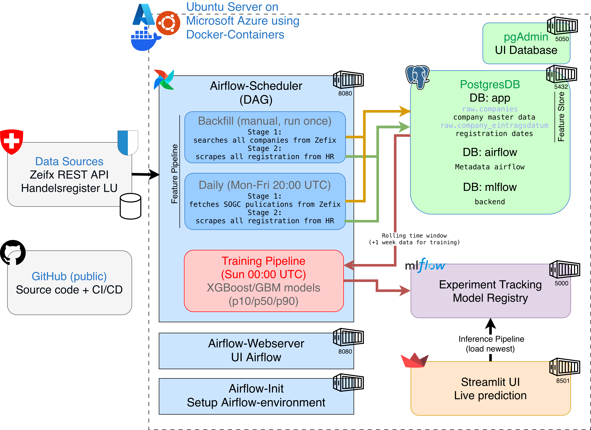
Predicting Weekly Company Registrations in Switzerland
Forecasts weekly new company registrations per canton using the live Zefix/Handelsregister API, with an incremental Airflow DAG storing date-partitioned Parquet on GCS.
GitHub →AeroPredict-Live — Real-Time Air Quality Forecaster (PM2.5, 24h horizon)
Predicts PM2.5 air quality 24 hours ahead using OpenAQ sensor readings and Open-Meteo weather data, with lag/rolling features and a Streamlit dashboard on HuggingFace Spaces.
GitHub →Golf Oracle — Round-by-Round PGA Tour Leaderboard Prediction
Predicts round-by-round PGA Tour scores using Kaggle historical data and live FreeWebAPI Golf + Open-Meteo weather, with explicit leakage prevention via one-step-shifted rolling features.
GitHub →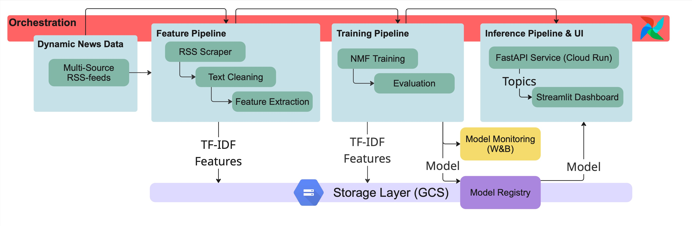
News Topic Modeling Pipeline — Tracking Shifts in News Attention
Trains an NMF topic model over articles from configurable European news sources and visualizes how topic focus shifts over time, with a daily Airflow pipeline, GCS artifact store, and FastAPI + Streamlit dashboard.
GitHub →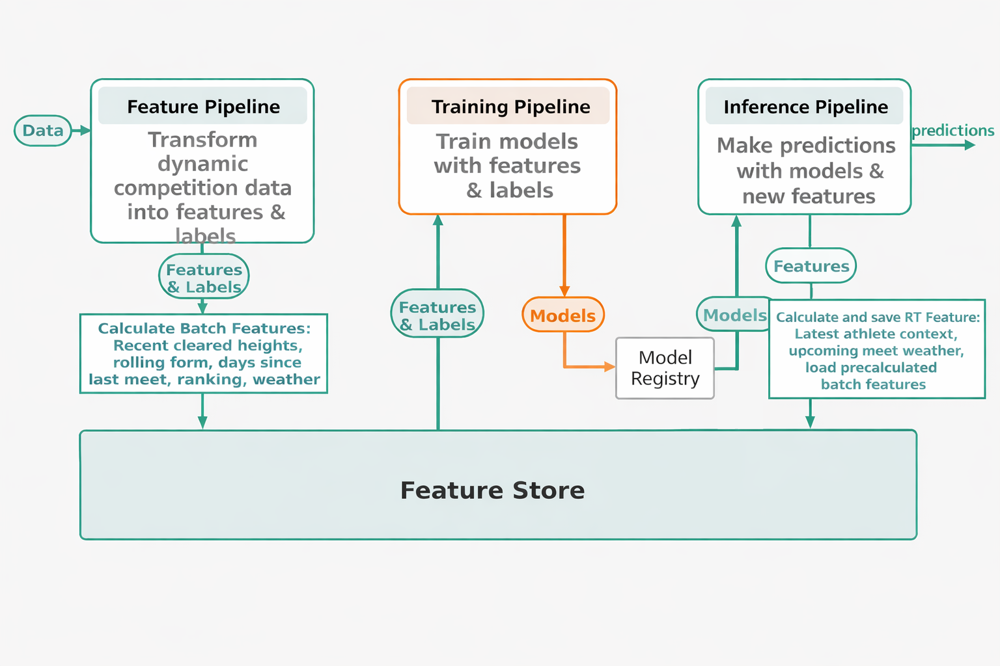
Live ML System Predicting Men's Outdoor High Jump Results
Predicts each athlete's next best cleared height in men's outdoor high jump using scraped World Athletics results and Open-Meteo weather, with athlete-centric rolling and trend features.
GitHub →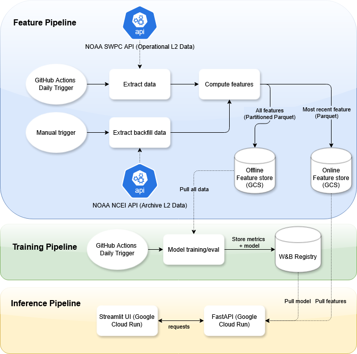
Solar Flare Early Warning System — 24h Max X-Ray Flux Forecast
Forecasts maximum X-ray flux over the next 24 hours and classifies M-class solar flare events using live NOAA SWPC data, with domain-aware features including flux derivatives and threshold-crossing counts.
GitHub →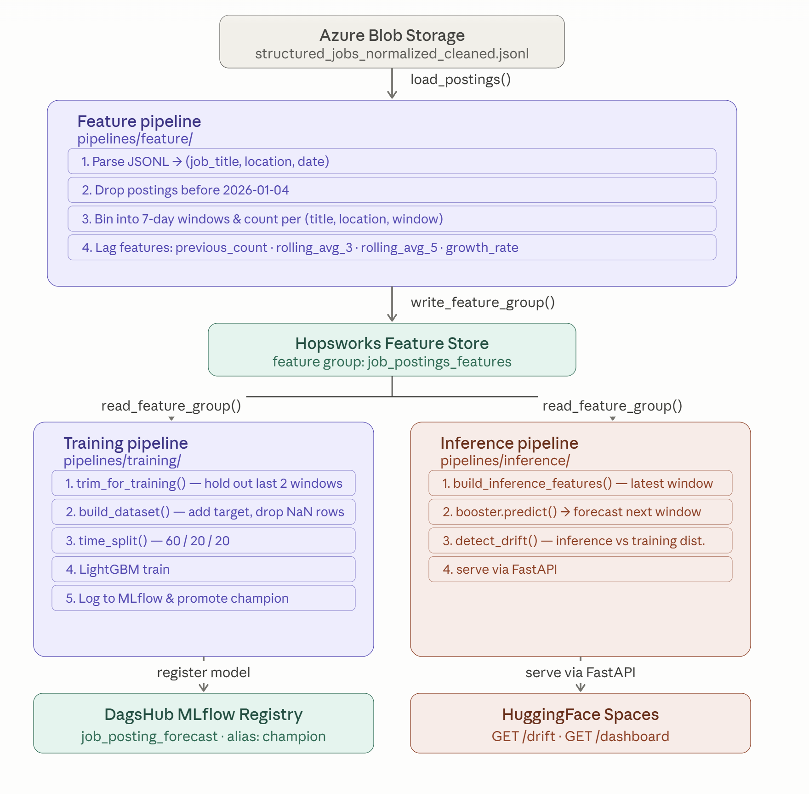
Swiss Job Market Demand Forecasting (Next-3-Days New Postings)
Forecasts new Swiss job postings per role × location over a 3-day horizon, using a UIPath scraper and OpenAI API for structuring, feeding a Hopsworks feature store with LightGBM models.
GitHub →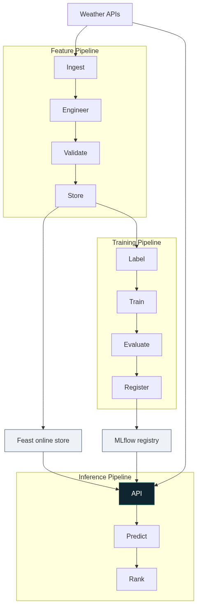
FöhnCast — Personalised Kiteboarding Forecast for Central Switzerland
Predicts a personalised 0–5 kiteboarding quality index per spot using föhn-wind conditions (Open-Meteo + MeteoSwiss), rider profile (weight, kite quiver), and OSRM drive-time routing.
GitHub →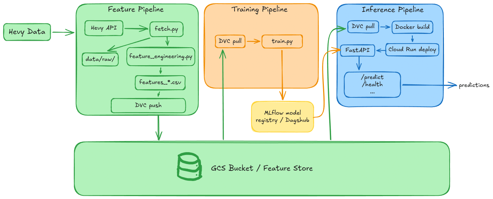
Hevy FTI Predictor — Per-Exercise Workout Volume Prediction
Predicts per-exercise total training volume for the next workout session from personal Hevy app logs, using rolling volume, rest-day, and progression features.
GitHub →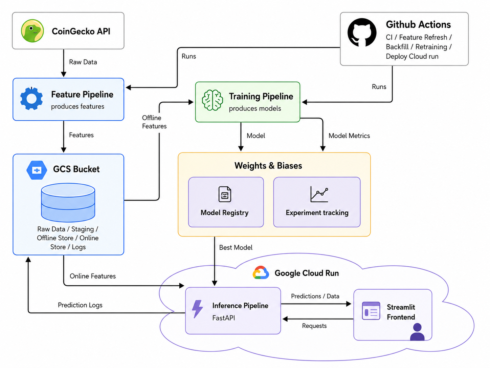
Cryptocurrency Price Direction Prediction (Binary, Fixed Horizon)
Predicts binary cryptocurrency price direction over a fixed horizon using price-derived technical features (returns, moving averages, volatility, momentum) from CoinGecko.
GitHub →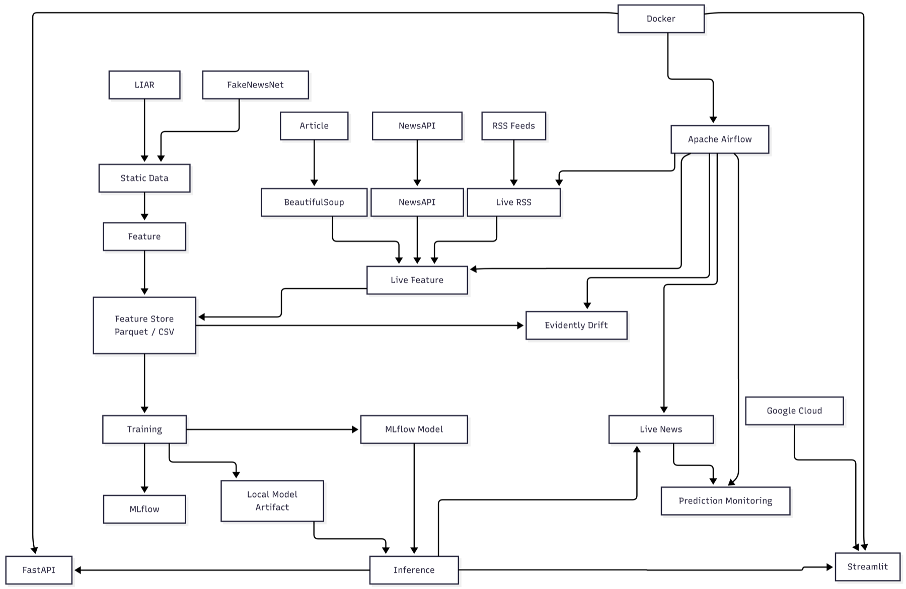
Real-Time News Credibility Scoring System (Score 0–100 + Risk Label)
Scores live news articles 0–100 for credibility and assigns a Low/Medium/High risk label using BERT embeddings over NewsAPI + RSS feeds, trained on LIAR and FakeNewsNet datasets.
GitHub →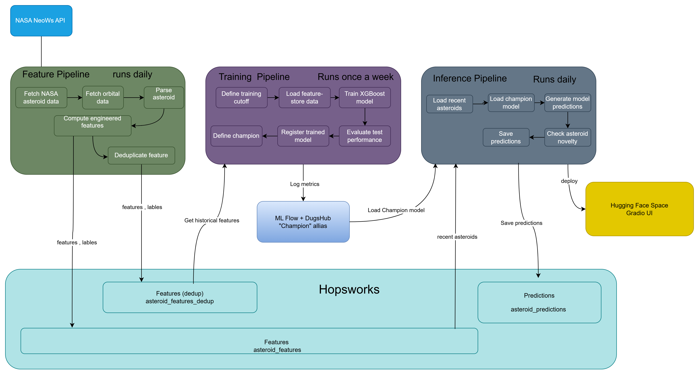
NASA Near-Earth Asteroid Hazard Predictor (Binary PHA Classification)
Classifies near-Earth asteroids as potentially hazardous using daily NASA NeoWs API ingestion, XGBoost, and a Hopsworks feature store with DagsHub MLflow tracking.
GitHub →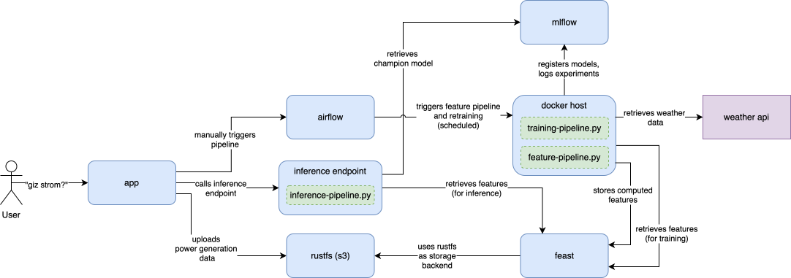
gizstrom — Rooftop Solar PV Generation Forecasting
Forecasts daily solar PV energy output (kWh) for a personal rooftop installation using Open-Meteo weather forecasts and Fronius inverter data, served via FastAPI on Google Cloud Run.
GitHub →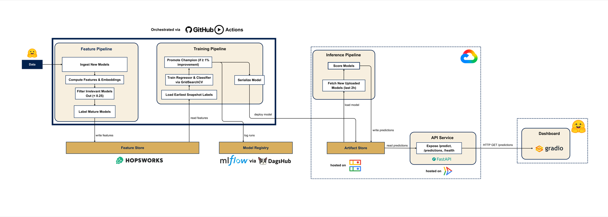
Ahead of the Curve — 30-Day HuggingFace Model Download Growth Prediction
Predicts 30-day download growth and top-quartile adoption for newly uploaded HuggingFace models using the Hub API, with a 90-day backfill to bootstrap training labels and sentence-transformer topic filtering.
GitHub →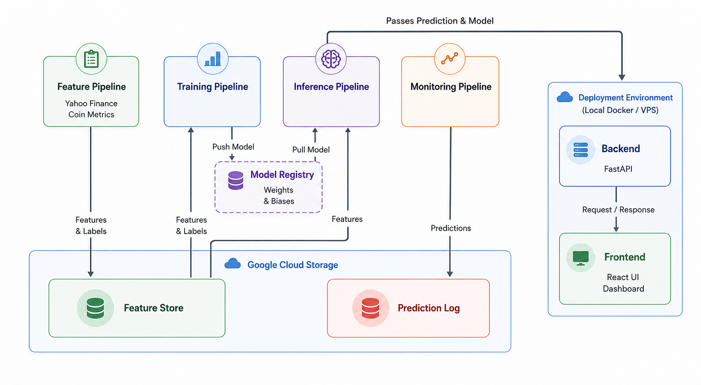
Bitcoin On-Chain Predictor — 24h BTC Price Direction from On-Chain Metrics
Predicts 24-hour Bitcoin price direction using on-chain metrics (active addresses, transaction volume from Blockchain.com) as the primary signal, with Airflow orchestration and AWS S3 feature store.
GitHub →